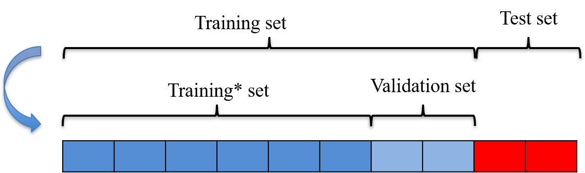
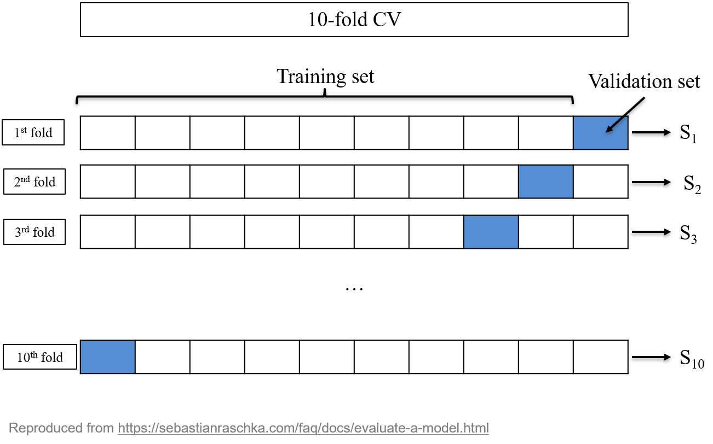
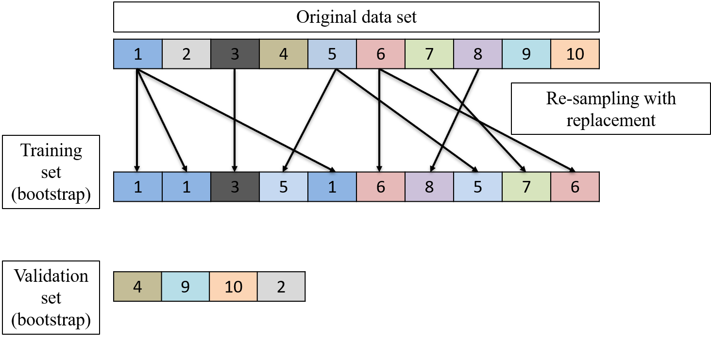

Data Splitting
Concept
A good model should have the good metric (predictions) and a good capacity to extrapolate outside the data base. Consider the following stupid but feasible model to predict an instance:
if the instance is already in the data base, the predicted class is the same as the one in the data base.
if the instance is not already in the data base, the prediction is random.
The model will have a perfect accuracy on the data base. However, it is useless for new instances.
Overfitting
This example illustrates that it is easy to build good predictions when the data base is available: predicting the past is easy. In the context of a supervised learning, a model may be good at predicting the data base on which it is trained but not the future/other data points. In practice however, this generalization capacity is crucial. A model having very good predictions on the data base, and a poor extrapolation capacity (for new instances) is said to overfit the data. Overfitting is one of the worst enemy in machine learning: it looks like things are going well, when in fact no good new predictions can be obtained.
Training and test sets
The simplest data split consists of:
A training set on which the models are trained;
A test set on which predictions are tested.
Concept
Often,
The split is random (assignment of the instances).
The two sets are disjoint: no common instance, except if they are already multiple in the data base.
Common proportions Tr/Te are like \(75/25\) or \(80/20\).
However, with very large data base, it is useless to have too large training set. With millions of data points, often a \(10\%\) training set is enough (if the data are representative and rich enough).
Apparent and test metrics
On the training set, the metrics (accuracies, etc.) are called apparent metrics: often too optimistic.
The test set they are called test metrics: close to the one expected when the model will be in use on new data.
To detect overfitting, for a positive metric (e.g., accuracy),
If \(Metric(Tr) >> Metric(Te)\): overfitting.
If \(Metric(Tr) \approx Metric(Te)\): no sign of overfitting.
A data set with 1000 instances,
Split at random:
training set of 750 instances,
Test set of 250 instances.
A logistic regression is fitted to the training set.
The features of the test set are given to the model to make the test set predictions. These are compared to the correct classes in the test set.
The apparent followed by test confusion matrices:
Reference
Prediction Bad Good
Bad 30 19
Good 195 506
Reference
Prediction Bad Good
Bad 6 7
Good 69 168The apparent and test accuracies are \[A_{tr} = \frac{30+506}{750} = 0.715, \quad
A_{te} = \frac{6+168}{250} = 0.696.\] The accuracy on the test set is closer to the one that can be expected if the model was used on new instances (e.g., in production).
Here, the test accuracy is lower than the apparent accuracy. This is a usual sign of over-fitting1.
Validation set
Validation set
When the training set is split further into a training set2 and a validation set.
Several models are trained on this smaller training set
The best model is selected based on the metrics obtained on the validation set.
The test metric of best model is computed to have a final evaluation of what this metric will be on new data.
This avoids information leakage: selecting the best model on the test set may cause overfitting of this test set...
Validation set is also used for cross-validation, hyperparameter selection, early stopping, etc. See below.
Illustration

Repeated splits
Repeated splits
One single training/validation/test split taken at random can be unstable or impossible to replicate: the randomness was badly balanced or too much dependence on this specific split.
Repeated splits can be used to address this issue. They are under two forms:
Cross-validation (CV).
Bootstrap.
Split the data set into non-overlapping \(K\) subsets,
For each \(k=1,\ldots,K\),
Use subset \(k\) as the validation set, and the rest of the data set as the training set,
Train the model on the training set
Compute the predictions on the validation set
Compute and record the metric \(S_k\)
This provides \(K\) metrics: \(S_1, \ldots, S_K\). The final CV metric is their average: \[\hat{S} = \frac{1}{K}\sum_{k=1}^K S_k.\] In addition, these metrics are used to estimate the standard deviation3 of \(\hat{S}\).

Example
A 10-fold CV is made. The accuracies of are logistic regression in each fold are \[\begin{array}{|c|c|c|c|c|c|c|c|c|c|}
\hline
S_1 & S_2 & S_3 & S_4 & S_5 & S_6 & S_7 & S_8 & S_9 & S_{10}\\
\hline
0.63 & 0.71 & 0.73 & 0.73 & 0.76 & 0.64 & 0.71 & 0.75 & 0.78 & 0.69\\
\hline
\end{array}\] The CV accuracy (standard deviation) is \(0.713\) \((0.049)\).
On the same data split, another model gives CV accuracy of 0.654 (0.053).
The logistic regression should be preferred here.
\(K\)-fold CV
How to choose \(K\)?
No universal good choice.
Choice of \(K\) is a trade-off between
computational capacity: large \(K\) gives more iterations and larger training sets, thus longer computation.
number of validation metrics: large \(K\) gives more \(S_k\) so \(\hat{S}\) is well estimated.
number of data to train the model: large \(K\) gives large training set thus better estimated models.
number of data to estimate the validation metric: large \(K\) gives small validation set, thus \(S_k\) is not well estimated.
In practice, use \(K=5\) or \(K=10\).
A special case is \(K=n\), known as leave-one-out (LOO).
Bootstrap: Re-sampling
In context of ML, bootstrap stands for re-sampling with replacement. It is an alternative to CV. The differences between CV and bootstrap are
for CV, the whole data base is split once. Training and validation sets do not have common instances.
For bootstrap, the training and validation sets vary in size and composition at each step.
The fact that instances can be repeated in the training set can create a bias. A weighted estimate tackles this issue: the 632-rule.
Bootstrap: Procedure
In practice, one bootstrap step consists of
Select at random a training set by sampling from the original data base, with replacements, a training set of the same size.
The instances in the original data base that are not in the generated training set constitute the validation set.
Compute the metric on the validation set after having trained the model with the training set: out-of-bag metric, \(\hat{S}_{oob}\).
Compute also the prediction of the training set itself: apparent metric, \(\hat{S}_{app}\).
Estimate the metric using the 632-rule: \[\hat{S} = 0.632 \times \hat{S}_{oob} + 0.368 \times \hat{S}_{app}.\]
One bootstrap step

Bootstrap estimate
The previous bootstrap step is repeated a large number of times; typically 500 to 10’000, depending on the time it takes (computation power). The final estimate is the average of each \(\hat{S}\). Standard deviation can be also computed.
Bootstrap samples
How many bootstrap samples (\(R\)) should be used?
There is no theoretical number but people consider that it should be at least large enough so that all the instances of the data base are at least once selected in a validation set.
In general, a large number, depending on the computational power and the data set size.
Practical use
With small data base, prefer bootstrap.
With large data base, prefer CV.
CV can be repeated: several CV pattern are simulated independently and aggregated at the end.
These procedures can be computed in parallel for better performance.
Solving the overfitting problem
Solving overfitting
Comparing apparent and test metrics allows to detect overfitting only. How can we improve the situation? A model that overfits the training data set is too flexible/complex. We can use the methods seen for each model to try to simplify them:
Linear and logistic regression: variable selection and/or use \(L_1\) and \(L_2\) penalization.
Trees: prune the tree.
SVM: tune the cost parameter and/or the parameters of the kernel.
NN: use \(L_1\) and \(L_2\) penalization and/or simplify the structure of the network.
Hyperparameters
Some of these methods require to set parameters: penalization parameter, cost parameter, others. These are called hyperparameters.Hyperparameters are structural parameters or "pseudo-parameters" of the models. An informal definition is "whatever cannot be optimized by the training algorithm". To set these parameters is called tuning.
Tuning hyperparameters
The main technique consists of direct comparison (brute force):
Create a list of possible hyperparameter values.
Train all the models from the list.
Select the best in class according to the validation metric.
This approach can be done on
A simple split: training and validation
A repeated split: bootstrap or CV.
The choice of the hyperparameters must not be done on the test: a part of the information contained in the test set may leaks to the model choice and thus to the training. Avoid any information leakage: the test set must not be seen by the model, at any stage.
Solving the unbalance problem
"Unbalanced classes" refers to data set where the classes frequencies are unbalanced. E.g., doctor visit data have 4 times more “No” than “Yes”.
No Yes
4141 1049During the training, the model favors the predictions of the “No” to reach a better accuracy.
Unbalanced classes
E.g., the logistic regression, gives:
Confusion Matrix and Statistics
[...]
Accuracy : 0.8091
[...]
Sensitivity : 0.9771
Specificity : 0.1435
[...]
Balanced Accuracy : 0.5603This problem is detected with
low balanced accuracy
low sensitivity or specificity
One approach to solve this issue is to tune the probability threshold \(\lambda\): \[f(x_i;\theta) = \left\{ \begin{array}{ll} 1, & \mbox{if } p(x_i;\theta) > \lambda,\\ 0, & \mbox{if } p(x_i;\theta) \leq \lambda. \end{array} \right.\] To maximize the balanced accuracy, find the threshold \(\lambda\) that maximizes the Youden’s J statistics: \[J(\lambda) = \mbox{Spec}(\lambda) + \mbox{Sens}(\lambda) - 1.\] Note: this optimization is always at at cost of a lower accuracy.
Tuning probability threshold
Example after optimization:
Confusion Matrix and Statistics
[...]
Accuracy : 0.6991
[...]
Sensitivity : 0.7186
Specificity : 0.6220
[...]
Balanced Accuracy : 0.6703 Sensitivity decreased, specificity increased. Overall BA increased (and accuracy decreased).
The probability threshold \(\lambda\) is an hyperparameter. Use the splitting data method to avoid overfitting.
Another approach consists of balancing the classes in the training set. Two possible approaches:
Sub-sampling: Remove cases in the training set,
Re-sampling: Add cases in the training set.
In details
Sub-sampling: take all the “Yes” and a random subset of “No” of the same size.
Re-sampling: take all the “No” and add replicates of the “Yes”, chosen at random, until there are as many “Yes” as “No”.
Variations are possible to increase or decrease the weight of each class, to take into account for the proportions.
Note: the test set must NOT be balanced.
Class balancing
Examples, with sub-sampling
Accuracy : 0.7049
[...]
Sensitivity : 0.7331
Specificity : 0.5933
[...]
Balanced Accuracy : 0.6632 and with re-sampling
Accuracy : 0.7097
[...]
Sensitivity : 0.7391
Specificity : 0.5933
[...]
Balanced Accuracy : 0.6662 The results are similar to tuning of \(\lambda\).
Discussion on class balancing
Case imbalance is a common problem in real life data (fraud detection, rare events, etc.).
Applied on the data, class balancing is a possible solution to improve the fit.
Unlike tuning of the probability threshold, class balancing can be apply to no-probability models and multi-class problems.
There is no guarantee. The final performances must be inspected.
The test set must remain unbalanced to be representative of future data.
If you use CV or bootstrap, the validation set must remain unbalanced (often not the case in built-in methods).